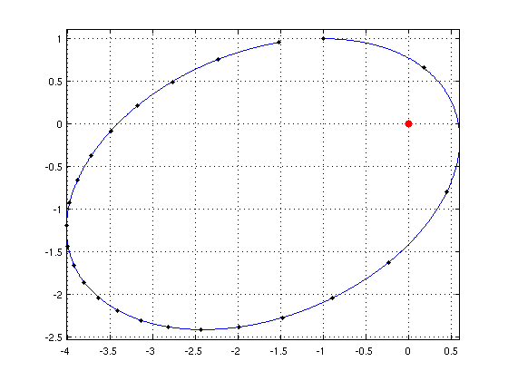
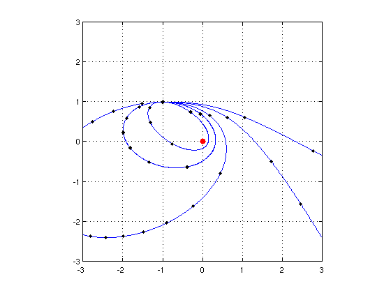
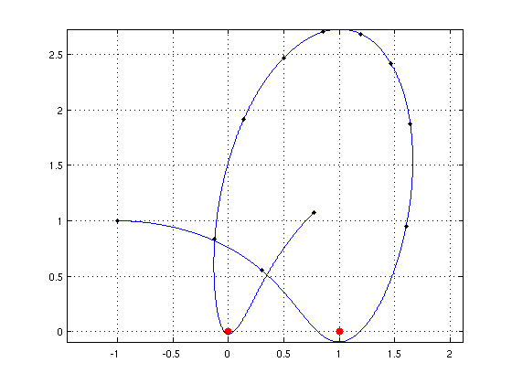
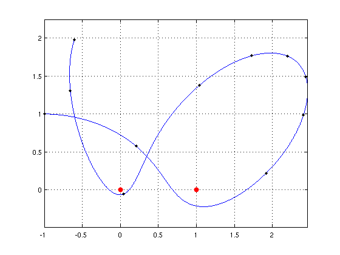

Orbiting around fixed stars
Nick Trefethen, 16th November 2011
(Chebfun example ode/Orbits.m)
Suppose a "star" of unit mass is fixed at the origin in the x-y plane, and a planet, also of unit mass, moves around it according to Newton's laws with gravitational constant 1. To be specific, let's suppose the planet starts at (-1,1) heading east with speed v=1. What does the trajectory look like?
Here is a code to solve this problem using Chebfun's ode113 command, and complex arithmetic for simplicity. We track the orbit for 23 time units and see that it is an ellipse.
tmax = 23; d = domain([0 tmax]); LW = 'linewidth'; MS = 'markersize'; opts = odeset('abstol',1e-10,'reltol',1e-10); fun = @(t,u) [u(2); -u(1)./abs(u(1)).^3]; u0 = -1+1i; v = 1; uv = ode113(fun,d,[u0; v],opts); uv = uv(:,1); hold off, plot(0,0,'.r','markersize',24), hold on plot(uv,LW,1.6), axis equal, grid on, shg plot(uv(0:tmax),'.k',MS,16)
If we want the initial speed v to be a parameter, we can make an anonymous function:
u = @(v) ode113(fun,d,[u0; v],opts);
Here are the orbits for v = .5, .75, 1, 1.5, 2. This kind of thing is familiar from introductory physics: every orbit is an ellipse, a parabola, or a hyperbola.
hold off, plot(0,0,'.r','markersize',24), hold on for v = [.5 .75 1 1.5 2] uv = u(v); uv = uv(:,1); plot(uv,LW,1.6) plot(uv(0:tmax),'.k',MS,16) end axis([-3 3 -3 3]), axis square, grid on, shg
More unusual behavior comes about if we imagine two or more fixed "stars". Orbits can now be bounded without being periodic. For example, suppose we have one star at (0,0) and another at (1,0), with the planet feeling a gravitational tug from each. Here is an orbit over 10 time units starting with v=1:
fun = @(t,u) [u(2); -u(1)./abs(u(1)).^3-(u(1)-1)./abs(u(1)-1).^3]; tmax = 10; d = domain([0 tmax]); u = @(v) ode113(fun,d,[u0; v],opts); v = 1; uv = u(v); uv = uv(:,1); hold off, plot([0 1],[0 0],'.r','markersize',24), hold on plot(uv,LW,1.6), axis equal, grid on, shg plot(uv(0:tmax),'.k',MS,16)
Here is what happens when the initial speed is reduced to 0.9:
v = 0.9; uv = u(v); uv = uv(:,1); hold off, plot([0 1],[0 0],'.r','markersize',24), hold on plot(uv,LW,1.6), axis equal, grid on, shg plot(uv(0:tmax),'.k',MS,16)
How long is the trajectory?
orbit_length = norm(diff(uv),1)
orbit_length = 10.646554662556406
How close does it come to the origin?
closeness = min(abs(uv))
closeness =
0
Variations on this theme are infinite!